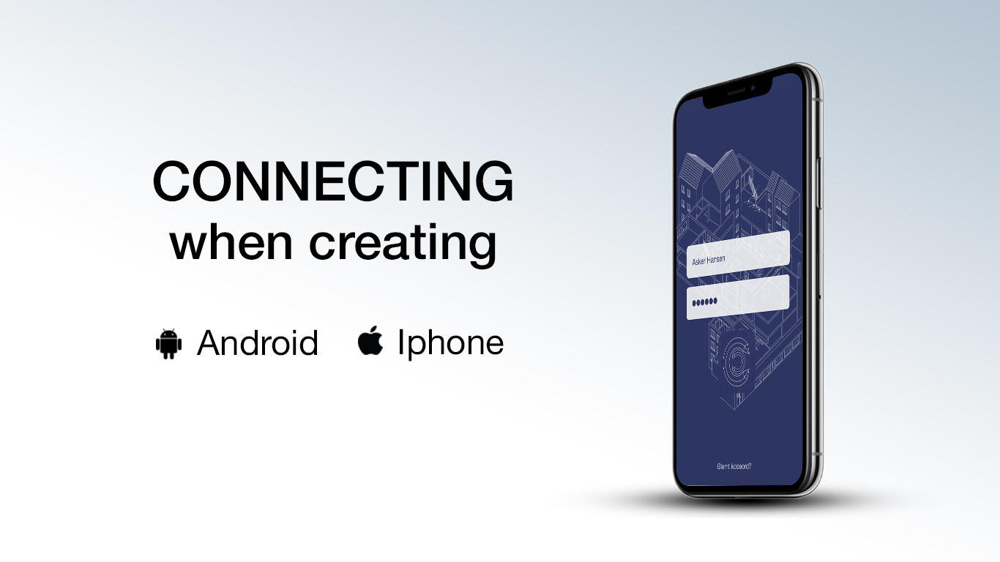

UX
Grundlæggende UX, som var det sidste forløb på 1. semester, omhandlede udvikling af prototyper af to forskellige app's. En stor del af UX-forløbet handlede om brugerundersøgelser og forretningsforståelse (Business Model Canvas). Vi blev introduceret for brugen af Experience Maps, hvor der skulle hives data ind fra både brugerundersøgelser, interviews og vores egne idéer og synspunkter. Ud fra disse data skulle der laves pain points og herefter persona beskrivelser, for til sidst at lave Design Charette og storyboard.
Herefter skulle vi udvikle paper-prototyper af vores app-idéer som skulle testes og herefter rettes til, testes igen af testpersoner, før den endelige udvælgelse af idé.
Ved endeligt valg af idé skulle denne udvikles i Adobe XD, som er et program til at udvikle prototyper. Vi lærte også om brugen af UI-kits til brug af design af prototyperne.
KEA-APP
Første opgave i UX-forløbet var udvikling af en KEA-app. Ved brug af ovenstående teorier, fandt vi i gruppen frem til en app der skulle afhjælpe de studerende på KEA med at kunne holde bedre styr på deres studieliv.
04.01.05
04.01.06
REPUBLIKKEN // KUNDECASE
Den sidste opgave i UX forløbet, var en kundeopgave for Republikken - et stort kontorfælleskab i København. De ønskede en app der kunne samle deres medlemmer og lade dem vidensspare med hinanden.
Denne app og dette forløb, har været den indtil videre mest omfattende opgave jeg har været med til at løse.
Gennem hele forløbet havde min gruppe og jeg en nogenlunde idé om hvilken slags app vi gerne ville skabe, ud fra de informationer vi fik fra kunden.
Vi brugte meget tid på vores experince map og tid på at undersøge markedet. Vi lavede brugerundersøgelser hos andre der sad i kontorfællesskaber og samlede derefter data, som vi sammenlignede med kundens egen brugerundersøgelse fra deres medlemmer.Vi benyttede os af Scrum-metoden og brugte Trello som værktøj til at danne overblik over vores arbejde - hvad vi skulle nå, hvad vi var i gang med og hvad vi havde afsluttet.
For detaljer omkring udarbejdelsen af app'en og procesarbejdet omkring den, tryk venligst på 04.02.03 nedenfor.
04.02.03
04.02.04
Co Create Logo
Splashbillede for Co Create
Moodboard